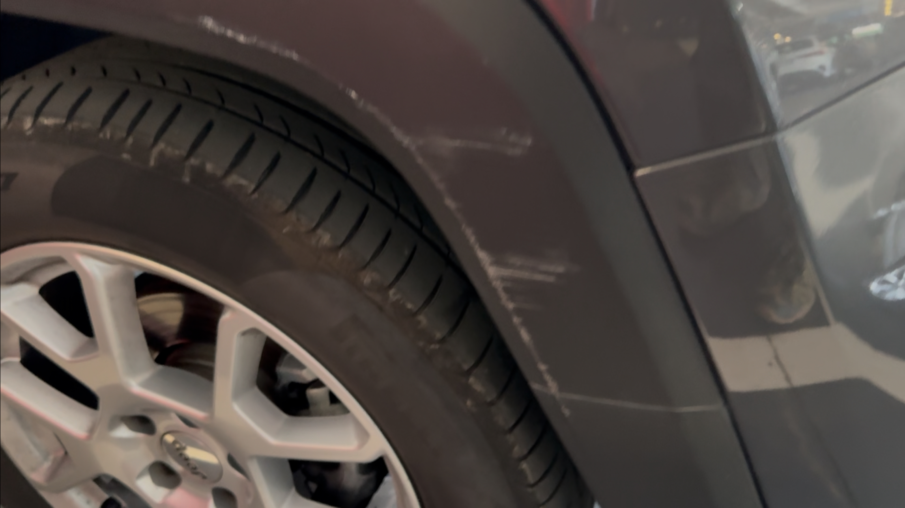

Nel luglio 2025 abbiamo soggiornato all'Hotel Berchielli a Firenze per due notti. L'hotel si trova vicino al Ponte Vecchio e, a causa delle restrizioni al traffico locale, gli ospiti devono affidarsi al servizio valet dell'hotel (Garage Florence Parking Firenze). Ci è stato detto di consegnare la nostra auto in Piazza di Santa Trinita e poi camminare fino all'hotel.
Data dell'Incidente: Luglio 2025
Documentazione Pubblicata: 25 Agosto 2025
Ultimo Aggiornamento: 25 Agosto 2025
Riassunto Esecutivo
Sebbene i soggiorni in hotel siano spesso senza problemi, possono sorgere questioni inaspettate. Ciò che conta di più è come un hotel risponde quando le cose vanno male. Nonostante il chiaro riconoscimento scritto della responsabilità, l'Hotel Berchielli ha fallito nell'agire. I viaggiatori dovrebbero essere consapevoli di questo rischio e considerare sistemazioni alternative a Firenze.
Dettagli dell'Incidente
Arrivo
Scoperta del Danno
Al momento del checkout, la nostra auto a noleggio è stata restituita alla piazza con un grande graffio e pannello piegato sul lato destro anteriore. Ho immediatamente informato il personale dell'hotel, che ha chiamato la compagnia valet. Il valet ha esaminato le riprese di sicurezza, che hanno confermato che il danno non era presente quando il veicolo è entrato nel loro garage.
Foto allegate del danno all'auto:

Area anteriore destra che mostra un graffio visibile e pannello piegato.

Vista più ravvicinata della stessa area, evidenziando l'estensione del graffio e della deformazione.
Ammissione Scritta di Responsabilità
Su mia richiesta, la compagnia valet ha dettato una dichiarazione di responsabilità al telefono. Un rappresentante dell'Hotel Berchielli ha scritto e firmato questo documento, riconoscendo che il danno si è verificato mentre il veicolo era sotto la loro custodia.
Foto allegata:

Dichiarazione di responsabilità firmata (in italiano, nomi oscurati). Dettata da Garage Florence Parking ma scritta e firmata dal personale dell'Hotel Berchielli, confermando che il danno si è verificato mentre l'auto era sotto la loro custodia. Traduzione della frase chiave: "Io sottoscritto, in qualità di responsabile di Garage Florence Parking, dichiaro che il veicolo è stato parcheggiato presso il nostro garage durante il periodo in cui si è verificato il danno."
Rifiuto della Compagnia di Noleggio
Quando ho restituito il veicolo a Roma, l'agenzia di noleggio mi ha informato che non c'era alcun accordo con l'Hotel Berchielli o Garage Florence Parking. Non ho avuto scelta se non pagare quasi €740 per le riparazioni.
Prova delle Spese
Di seguito è riportata la fattura ufficiale della compagnia di noleggio che dettaglia la spesa di €740 che sono stato costretto a pagare, nonostante l'ammissione scritta di responsabilità da parte del personale dell'Hotel Berchielli.
Foto allegata:

Fattura di Locauto Rent (dettagli personali oscurati) che mostra €740 di spese per danni che sono stato costretto a pagare, nonostante l'Hotel Berchielli e Garage Florence Parking abbiano firmato un'ammissione scritta di responsabilità.
Conseguenze
Da allora, ho inviato ripetutamente email sia all'Hotel Berchielli che a Garage Florence Parking, fornendo foto, video e il documento di responsabilità. Dopo una richiesta iniziale di immagini, non hanno più risposto né mi hanno rimborsato.
Conclusione
Sebbene i soggiorni in hotel siano spesso senza problemi, possono sorgere questioni inaspettate. Ciò che conta di più è come un hotel risponde quando le cose vanno male. Nonostante il chiaro riconoscimento scritto della responsabilità, l'Hotel Berchielli ha fallito nell'agire. I viaggiatori dovrebbero essere consapevoli di questo rischio e considerare sistemazioni alternative a Firenze.